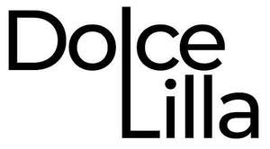

Trade Mark Journal No.2025/013 28 March 2025
UK00004152424 24 January 2025 (3,5,25,35)

- Class 3
- Perfumery; essential oils; cosmetics; hair lotions; deodorants for personal use; toiletries; soaps; make-up preparations; nail care preparations; cleaning preparations; beauty masks; shampoos; air fragrance preparations; depilatory preparations; cotton wool for cosmetic purposes; laundry preparations; hairspray; aromatherapy products; non-medicated toilet preparations; skin care preparations; nail care preparations; hair care preparations; topical skincare products for cosmetic purposes.
- Class 5
- Pharmaceutical and veterinary preparations; sanitary preparations for medical purposes; dietetic food and substances adapted for medical or veterinary use; food for babies; dietary supplements for humans and animals; plasters, foods and beverages adapted for medical use; foods and beverages which are adapted for medical purposes; medicinal drinks; medicated isotonic drinks; vitamin waters; vitamin drinks; vitamin products, gummies, dietary supplemental drinks; herbal beverages for medicinal use; beverages for medicinal purposes; medicinal teas; pharmaceutical preparations for skin, hair and nails; mineral supplements for preparation of collagen beverages; mineral nutritional supplements; vitamin supplements; probiotics, mineral supplements; dietary supplemental drinks; powder nutritional supplement for preparation of collagen drinks by adding water; food supplements; dietary supplements; beverages for medical and health purposes and uses; chewing gum for medical purposes; collagen drinks for weight loss and maintenance of healthy joints and for anti-ageing purposes; collagen drinks and collagen powder drink mixes for healthy joints, healthy skin, healthy hair and healthy nails; preparations for making beverages for medical and health purposes and uses; topical and liquid medical preparations.
- Class 25
- Parts of clothing, footwear and headwear. Includes shirts, pants, uniforms, swimsuits, baseball caps, running shoes, cuffs, pockets, ready-made linings, heels and heelpieces, cap peaks, hat frames (skeletons); clothing and footwear for sports, ski gloves, sports singlets, cyclists' clothing, judo and karate uniforms, football shoes, gymnastic shoes, ski boots; masquerade costumes; paper clothing, paper hats for use as clothing; bibs, not of paper; pocket squares; footmuffs, not electrically heated. Clothing, aprons [clothing], ascots, pants for babies, bandanas, bath robes, bathing trunks, drawers as clothing, bathing suits, swimsuits, beach coverups, belts for clothing, bib overalls, boas, bodices, brassieres, breeches, camisoles, chasubles, clothing, clothing belts made from imitation leather, coats, collar protector pads, collars, shoulder wraps, combinations being one-piece undergarments, corsets, cuffs, cyclists' jerseys, detachable collars, dress shields, dresses, dressing gowns, ear muffs, fishing vests, footmuffs, fur stoles, furs muffs, gabardines, garters, shapewear, gloves, heelpieces for stockings, hoods, hosiery, sports jackets, rain jackets, jerseys, jumper dresses, knitwear, clothing layettes, leggings, leg warmers, liveries, maniples, masquerade costumes, mittens, money belts, neckties, overalls, smocks, overcoats, topcoats, pants, drawers, parkas, pelerines, pelisses, petticoats, pocket squares, pockets for clothing, ponchos, pullovers, pajamas, ready-made linings, saris, sarongs, sashes, scarves, shawls, shirt yokes, shirt fronts, short-sleeved shirts, singlets, sports jerseys, ski gloves, skirts, sleep masks, slips, sock suspenders, socks, spats, stocking suspenders, stockings, sweat-absorbent stockings, stuff jackets, suits, suspenders, sweat-absorbent underclothing, anti-sweat underclothing, anti-sweat underwear, sweaters, teddies being underclothing, tee-shirts, tights, togas, trouser straps, trousers, underpants, underwear, uniforms, veils, vests, waistcoats, waterproof jackets, and wet suits.Sports caps and hats, headbands bathing caps, berets, cap peaks, toboggan hats hat frames, mantillas, shower caps, skull caps, clothing head wraps, veils, ear muffs, top hats, turbans, visors being headwear, and wimples.Footwear, bath sandals, bath slippers, beach shoes, boot uppers, boots, boots for sports, esparto shoes or sandals, fittings of metal for footwear, football shoes, footwear uppers, galoshes, gymnastic shoes, half boots, heelpieces for footwear, heels, inner soles, lace boots, sandals, ski boots, slippers, soles for footwear, sports shoes, studs for football boots, tips for footwear, welts for footwear, and wooden shoes.
- Class 35
- Business management, operation, organization and administration of a commercial or industrial enterprise, as well as advertising, marketing and promotional services. The bringing together, for the benefit of others, of a variety of goods, enabling customers to conveniently view and purchase perfumery, essential oils, cosmetics, hair lotions, deodorants for personal use, toiletries, soaps, make-up preparations, nail care preparations, cleaning preparations, beauty masks, shampoos, air fragrance preparations, depilatory preparations, cotton wool for cosmetic purposes, laundry preparations, hairspray, aromatherapy products, non-medicated toilet preparations, skin care preparations, nail care preparations, hair care preparations, pharmaceutical and veterinary preparations, sanitary preparations for medical purposes, dietetic food and substances adapted for medical or veterinary use, food for babies, dietary supplements for humans and animals, plasters, foods and beverages adapted for medical use, foods and beverages which are adapted for medical purposes, medicinal drinks, medicated isotonic drinks, vitamin waters, vitamin drinks, dietary supplemental drinks, herbal beverages for medicinal use, beverages for medicinal purposes, medicinal teas, pharmaceutical preparations for skin, hair and nails, mineral and aerated waters and other non-alcoholic beverages, mineral supplements for preparation of collagen beverages, mineral nutritional supplements, vitamin supplements, dietary supplemental drinks, powder nutritional supplement for preparation of collagen drinks by adding water, food supplements, dietary supplements, drinks, fruit beverages and fruit juices, vegetable juices, syrups and other preparations for making beverages, powders, granules, essences or pastilles for making beverages, soft drinks, energy drinks, sports drinks, non-medicated isotonic drinks, aloe vera drinks, non-alcoholic drinks, non-alcoholic and non-medicated beverages containing collagen, beverages for medical and health purposes and uses, chewing gum for medical purposes, collagen drinks for weight loss and maintenance of healthy joints and for anti-ageing purposes, collagen drinks and collagen powder drink mixes for healthy joints, healthy skin, healthy hair and healthy nails, collagen drinks, collagen sports drinks, collagen soft drinks, daily collagen drinks with added vitamins, milk and botanical extracts, collagen drink mix powders that need to be rehydrated by adding water or fruit juice, preparations for making beverages for medical and health purposes and uses, preparations for making beverages for use in hair care, skincare and nail care. Clothing, footwear and headwear for human beings. Includes shirts, pants, uniforms, swimsuits, baseball caps, and shoes. Advertising, marketing and promotional services, for example, distribution of samples, development of advertising concepts, writing and publication of publicity texts. Organization of trade fairs and exhibitions for commercial or advertising purposes; .
DOLCE LILLA LTD